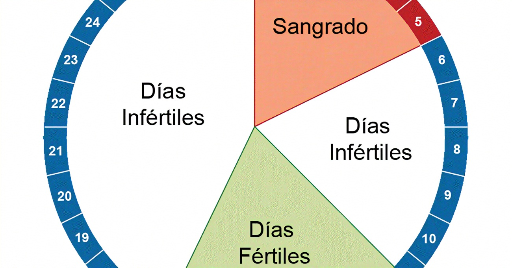
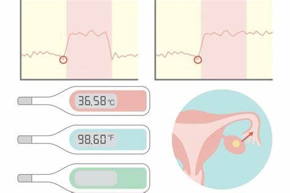

Método del Calendario o Ritmo

El método del calendario, también llamado método del ritmo, es un método anticonceptivo natural que se basa en evitar relaciones sexuales durante los días fértiles del ciclo menstrual.
¿Cómo funciona?
- Registrar la duración de los ciclos menstruales por 6 a 12 meses.
- Evitar relaciones durante el periodo fértil calculado.
- Se asume que la ovulación ocurre 14 días antes del siguiente periodo.
Cálculo aproximado
Para estimar los días fértiles:
- Ciclo más corto menos 18 días.
- Ciclo más largo menos 11 días.
- El rango resultante es el periodo fértil.
Ejemplo: Ciclos de 26 a 32 días:
- 26 − 18 = día 8
- 32 − 11 = día 21
Días fértiles: del 8 al 21 del ciclo.
Ventajas
- Natural y económico.
- Sin efectos secundarios.
Desventajas
- Menor eficacia (20-25% de falla).
- No protege contra ETS.
- Requiere ciclos regulares y disciplina.
Temperatura Basal y Moco Cervical
Estos métodos permiten identificar los días fértiles observando señales naturales del cuerpo.
Método de la Temperatura Basal
Consiste en medir la temperatura corporal al despertar cada día antes de realizar cualquier actividad.
- La temperatura sube 0.2°C a 0.5°C durante la ovulación.
- Requiere seguimiento por al menos 3 ciclos.
Ventajas
- Natural, sin medicamentos.
- Conocimiento del cuerpo.
Desventajas
- Alterable por fiebre o insomnio.
- No protege contra ETS.
Método del Moco Cervical (Billings)

Observa los cambios en el flujo vaginal durante el ciclo menstrual.
- El moco fértil es claro y elástico como clara de huevo.
- Después de la ovulación se vuelve espeso y opaco.
Ventajas
- Sin efectos secundarios.
- Promueve el autoconocimiento.
Desventajas
- Puede confundirse con otros fluidos.
- Observación diaria obligatoria.